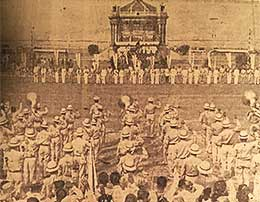

|
j
a v a s c r i p t |
April 19, 1943

Constabulary Band at Loyalty Affair
Yesterday was Loyalty Day — N.A. members gathered at the New Luneta to make their pledge. District leader Pacifico Ledesma had to go. He estimated that 15 to 20,000 attended — a far cry from the 75,000 figure in today's papers. The cordon of police that tried to keep everybody there didn't always succeed. An angry Filipino admonished an overly efficient policeman in Tagalog: "Don't be too bold, you know the Americans will be back." As for the pledge, Pacifico raised his left hand. The person next to him explained he was raising five fingers, one each for lard, soap, sugar, matches and "whatnot." Some raised their hands with fingers crossed. |
|
|
|
|